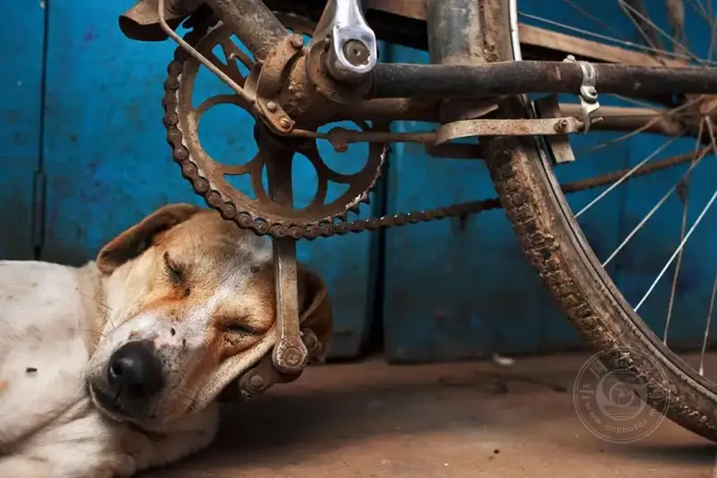
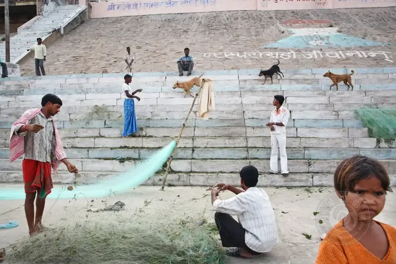
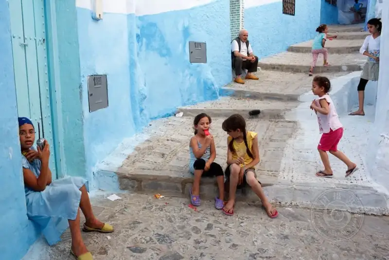
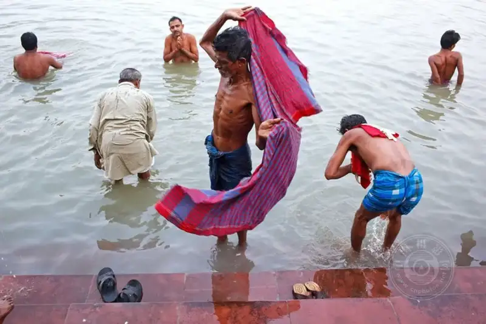
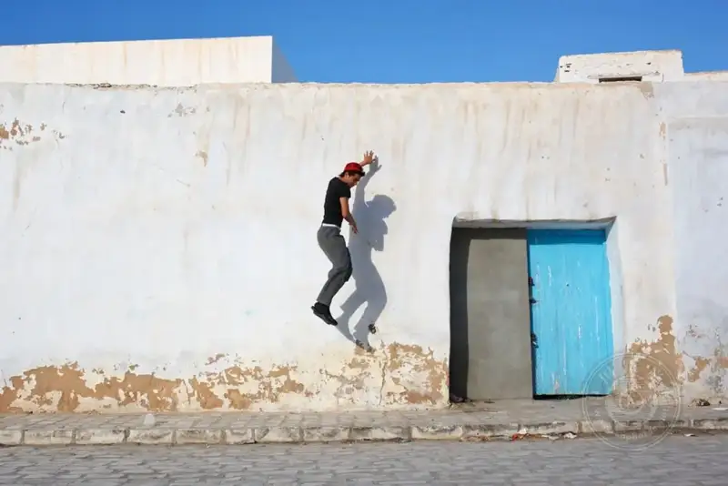

Street photography is not about photographing strangers. It is about the moment you brush past the world.
The street is the best theater, passersby are the best actors, and your camera is the pen that records this human drama. For those who love to record the world as it unfolds, the five points below are worth studying again and again.

01 Know your gear by heart
| The camera is an extension of your eye. The more smoothly you use it, the more it disappears.
Know your gear
Whether you use a high-end DSLR, a mirrorless camera, or just a smartphone, knowing your gear by heart is essential. Knowing what your camera can and cannot do lets you react fast to a moment that will not wait. Spend time learning aperture, shutter speed, and ISO. Practice manual mode, because it gives you more control.
Pick the right lens
A prime lens between 35mm and 50mm is usually the first choice for street work. These lenses are versatile, and their view is close to the human eye, so your photos look natural. But do not be afraid to try other lenses. Use a wide angle for dramatic perspective, or a telephoto to catch a distant subject.

02 Embrace the art of looking
| The best street photo is not the second you press the shutter. It is the ten minutes before you press it.
Stay invisible
The best street photographers blend into their surroundings. Dress quietly, move calmly, and stay out of attention. Then you can catch real, natural moments without disturbing the scene.
Patience is key
Street photography needs patience. Sometimes you must wait for the perfect moment to appear on its own. Find a good spot, settle in, and watch closely. Notice details, expressions, and the exchanges between people. The streets are full of stories waiting to be told, and a sharp eye will help you catch them.

03 Respect your subjects
| Before you press the shutter, learn to read the other person face. After you press it, do not forget to say thank you.
Ethics
Street photography often means candid shots of strangers, but respecting your subject is essential. Mind people privacy and personal space. If someone notices you shooting them and seems uneasy, be ready to talk politely, explain what you are doing, or simply leave.
Ask for permission
In some cases, asking permission on purpose leads to closer, stronger portraits. Approaching people with a smile and respect can open the door to interesting stories and unique chances to shoot.

04 Master the light
| Light is the soul of photography, and shadow is the love letter it leaves on the street.
Natural light
Light is a basic element of photography, and using it well raises your street photos to a new level. Early morning and late afternoon, the so-called golden hour, give soft, warm light that adds a dreamy feel. Overcast days give diffused light, which is great for evenly exposed portraits with no harsh shadows.
Shadows and silhouettes
But you need not deliberately avoid strong sunlight. Hard light and shadow create drama and interesting composition. Look for chances to work with silhouettes, reflections, and contrast between light and dark.

05 Build your own style
| You imitate the masters to go beyond yourself. Style is not found. It grows.
Learn from the masters
Study the classic work of famous street photographers such as Henri Cartier-Bresson, Garry Winogrand, and Vivian Maier. Analyze their technique, composition, and how they catch the essence of the street. Knowing the history and development of street photography will inspire your own work.
Experiment and evolve
Building a distinct style takes time and constant trial. Do not be afraid to try different techniques, angles, and subjects. Look critically at your own work, and ask other photographers for feedback. As you grow as a photographer, your style will naturally evolve and mature.
06 In closing
Street photography is a rewarding creative practice. It blends technical skill, a sharp eye, and the ability to connect with people.
The point of street photography is not to take a pretty picture. It is to capture truths that will disappear. Every street photo you take is a letter the city writes to the future. Technique teaches you how to take a good photo, and love tells you why you keep shooting.
By knowing your gear, staying patient and watchful, respecting your subjects, mastering the light, and building your own style, you will steadily make street photos that draw people in and tell true stories.
If you had to define street photography in one sentence, what would you say?
I will go first: Street photography is walking through the world with a camera.
Of the five points above, which do you most want to work on now? Or do you have your own street photography tips to share?
Please leave a comment. We will grow on the street together.